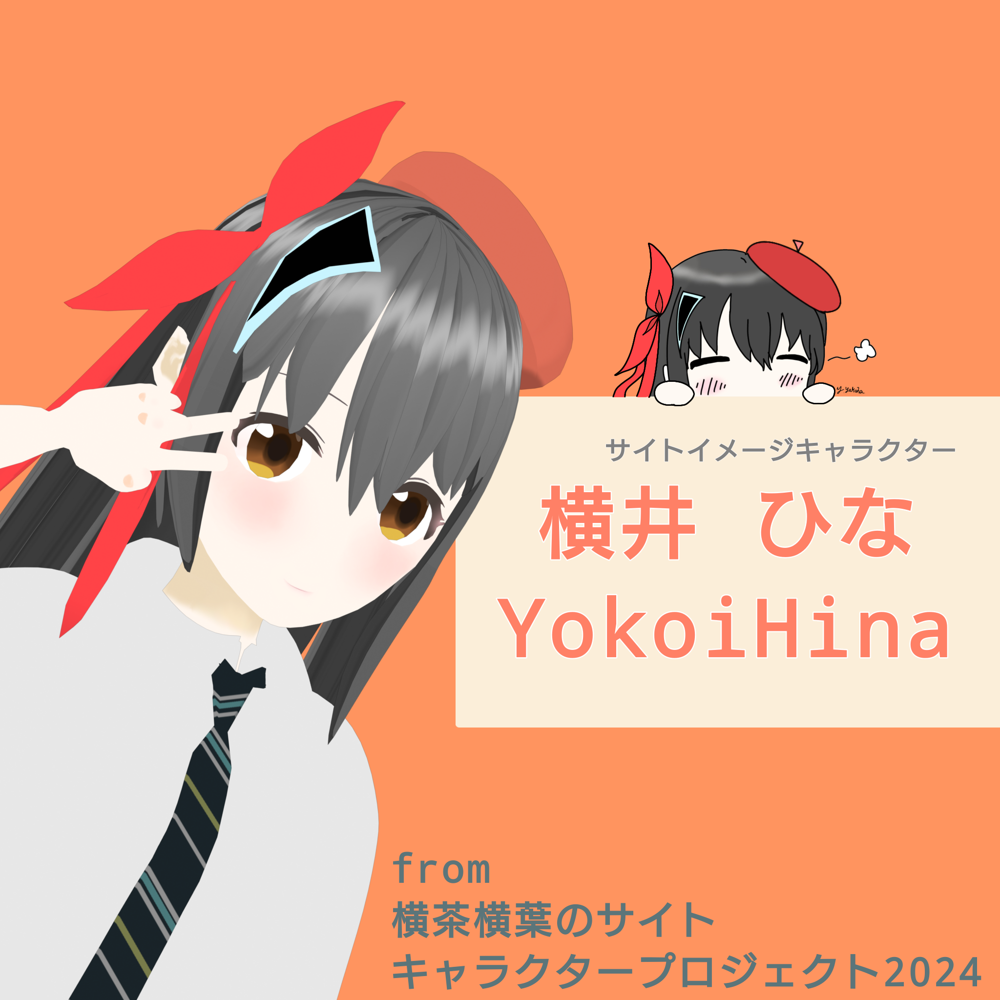
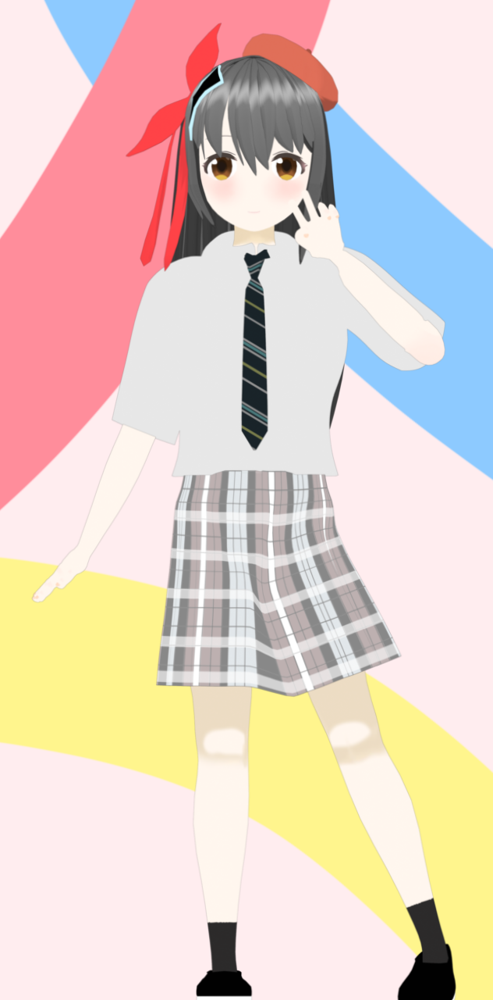
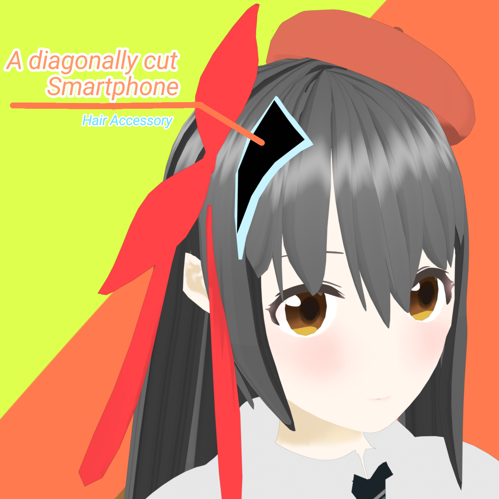

横井陽菜とは?
引用元: 横井ひな Official Reference Site(2025)
横茶横葉のサイトにて2024年に行ったキャラクター制作プロジェクトにて"サイトキャラクター"として公表したキャラクターです。
常に頭にスマホを斜めにに分割したような髪飾りを着用している点が注目ポイントです。
名前:横井陽菜(よこい ひな)
年齢:19歳
誕生日:2月12日
身長:159cm
趣味:スマホいじり、料理、カフェ巡り
好きなもの:スマホ
嫌いなもの:怖いこと全般
サイトキャラクターとしての役割だけでなく、横茶横葉のサイトに関連する各種コンテンツ(イラスト、動画、アプリなど)にも多く登場していました。
横井陽菜の公式プロフィールページはこちらQuestion
1. サイトにマスコットキャラクターなんて必要?
必要性は全く感じていませんでしたが、なぜか作り始めてしまいました。
2. なぜスマホをモチーフにしたの?
横茶横葉のサイト管理人である私がスマホ大好き人間だからです。
3. 今後もキャラクタープロジェクトは続けるの?
今のところ予定はありません。(飽きてしまいました。)
4. なんで 横井 なの?
管理人の名前が 横 から始まるので、そうしました! 他のキャラクターの頭文字を合わせると横茶横葉になったりならなかったり...。
5. 男性のキャラクターはなんで居ないの??
います! が... 公表した当時からあまり表には出ていませんでした。
ページを今回初めて用意致しましたのでご覧になりたい方はどうぞ!
6. このキャラ、私使いたい! 二次創作してもいい?
はい、どうぞご自由にお使いくださいませ! ですが、まだ一応サイトキャラクターとしては現役なのでサイトのイメージ(そもそもそんなものない気もしますが)を壊さないようなガイドラインに従った利用をお願いします。
横井陽菜の公式プロフィールページにガイドラインがあります7. 今更なぜキャラクター紹介ページを作ったの?
キャラクター制作はもうやらないと思い、せめて紹介ページくらいは作っておこうと考えたからです。いわゆるファイナライズです!